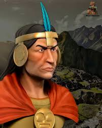

Pachacútec: el gran transformador del Tahuantinsuyo
Pachacútec Inca Yupanqui fue el noveno gobernante del Imperio Inca y el más trascendental en la historia de esta civilización. Su nombre, que en quechua significa “el que transforma el mundo” o “el que cambia el rumbo del tiempo”, es un reflejo de su papel como reformador, conquistador y fundador del gran Imperio del Tahuantinsuyo. Nació aproximadamente en el año 1400 en Cusco, en el seno de la familia real incaica. Era hijo del inca Huiracocha y de la coya Mama Runtu, aunque su nombre de nacimiento era Cusi Yupanqui. Desde joven se destacó por su inteligencia, su carisma y su habilidad militar. A diferencia de otros miembros de la nobleza, mostró un gran interés en el liderazgo y en la defensa del Cusco frente a las amenazas externas.
El momento crucial de su vida llegó cuando los chancas, un poderoso pueblo enemigo, amenazaron con invadir y destruir Cusco. El inca Huiracocha y el heredero oficial, Urco, huyeron, abandonando la ciudad. Sin embargo, Cusi Yupanqui decidió quedarse y organizar la resistencia. Reunió a un ejército con aliados locales y lideró una épica batalla contra los chancas, logrando una victoria milagrosa que salvó la capital incaica. A partir de entonces, fue aclamado como héroe y recibió el título de Pachacútec, el que cambió la historia. Tras esta victoria, el prestigio de Pachacútec creció enormemente. Fue reconocido como el nuevo Sapa Inca, el gobernante supremo, desplazando a su padre y a su hermano. Su ascenso al poder marcó el inicio de una nueva era para los incas. Bajo su liderazgo, el pequeño reino del Cusco se transformó en un vasto imperio que se extendió desde el sur de Colombia hasta el norte de Chile y Argentina, abarcando múltiples culturas y regiones.
Pachacútec fue mucho más que un conquistador. Fue también un gran reformador del Estado. Centralizó el poder en la figura del inca y estableció una administración eficiente basada en el principio de la reciprocidad y el control estatal. Reorganizó el sistema político del imperio, dividiéndolo en cuatro regiones o suyus: Chinchaysuyu, Antisuyu, Collasuyu y Cuntisuyu, que juntos formaban el Tahuantinsuyo, “las cuatro regiones del mundo”. Una de sus principales contribuciones fue la codificación de leyes y normas que regían la vida en el imperio. Estas incluían obligaciones laborales, principios de justicia, normas de convivencia y castigos para quienes violaran el orden social. Bajo su mandato, se fortaleció la figura del ayllu, la comunidad básica de organización social, y se promovieron obras de infraestructura sin precedentes.
Entre estas obras destaca la construcción y ampliación de caminos, puentes colgantes, centros administrativos y terrazas agrícolas. Estos caminos, conocidos como Qhapaq Ñan, se extendían a lo largo de miles de kilómetros, facilitando el transporte, el comercio, la comunicación y la movilización del ejército. También permitió mantener un contacto fluido con los pueblos conquistados y distribuir los recursos de manera equitativa. Pachacútec también dejó una profunda huella en el ámbito religioso. Reforzó el culto al dios solar Inti, al que consideraba su antepasado directo, y reorganizó el Coricancha, el templo del sol en Cusco, convirtiéndolo en el centro espiritual del imperio. Consolidó la figura del inca como un ser semidivino, hijo del Sol, lo cual fortaleció su legitimidad política y su autoridad frente a otros pueblos.
Una de sus obras más emblemáticas fue la construcción del santuario de Machu Picchu, un complejo arquitectónico ubicado en los Andes, que probablemente sirvió como residencia real, centro ceremonial y observatorio astronómico. La elección de este sitio sagrado, en plena armonía con la geografía y las creencias andinas, refleja la cosmovisión de Pachacútec y su comprensión del equilibrio entre el hombre y la naturaleza. Durante su reinado, los incas expandieron su territorio mediante la diplomacia, la persuasión y también mediante la guerra. Muchos pueblos fueron incorporados al imperio a través de alianzas, matrimonios o mediante la imposición militar. Pachacútec implementó un sistema de mitmaqkuna, que consistía en trasladar poblaciones enteras para evitar rebeliones, fomentar el intercambio cultural y asegurar la lealtad al Estado.
La visión de Pachacútec era la de un imperio organizado, fuerte y cohesionado. Fomentó el uso del quipu, un sistema de cuerdas con nudos que servía para llevar registros contables, censales y administrativos. Aunque los incas no desarrollaron la escritura como tal, el quipu fue una herramienta avanzada de gestión que permitió una administración eficiente. También reformó la arquitectura y el urbanismo. Se promovió el uso de la piedra tallada con precisión, sin el uso de mortero, en construcciones resistentes a terremotos. Bajo su mando, Cusco fue rediseñada en forma de puma, un animal sagrado, y se construyeron importantes edificaciones, como el Sacsayhuamán, una fortaleza ceremonial que protegía la ciudad.Pachacútec gobernó durante más de 30 años, consolidando el poder incaico y estableciendo las bases para las conquistas que continuarían sus sucesores, como Túpac Yupanqui y Huayna Cápac. Su reinado se considera la edad de oro del Imperio Inca, por su combinación de expansión territorial, reforma política, desarrollo económico y esplendor cultural. Cuando Pachacútec envejeció, delegó parte del gobierno a su hijo Túpac Yupanqui, quien ya lideraba campañas militares hacia el norte. Según las crónicas, Pachacútec murió hacia el año 1471. Fue enterrado en el Cusco, y su momia, como la de otros incas, fue preservada y venerada durante siglos.
Aspectos clave de Pachacútec Inca Yupanqui
- Nombre original: Cusi Yupanqui
- Significado de Pachacútec: “El que transforma el mundo” o “el que cambia el tiempo”
- Reinado: Aproximadamente entre 1438 y 1471
- Padre: Inca Huiracocha
- Logro militar principal: Derrotó a los chancas y salvó Cusco
- Título recibido: Sapa Inca (gobernante supremo del Imperio)
- Fundación del Tahuantinsuyo: Organizó el Imperio en 4 regiones (suyus)
- Reformas: Administración centralizada, leyes, tributo y control estatal